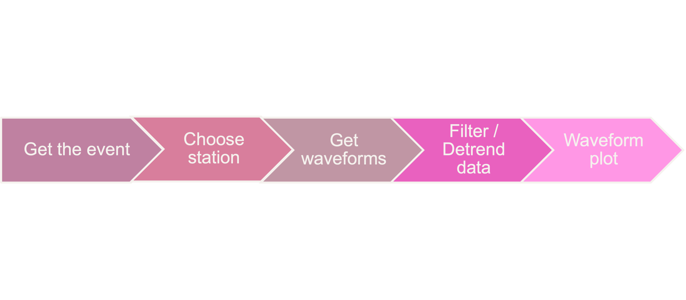

Seismic data request via ObsPy
Brief introduction
What is ObsPy?
ObsPy is an open-source project dedicated to provide a Python framework for processing seismological data. It provides parsers for common file formats, clients to access data centers and seismological signal processing routines which allow the manipulation of seismological time series (copied from ObsPy Github page).
We assume that you already have some experience of using Python. If not, you are suggested to read this small, incomplete introduction to the Python programming language.
How to install ObsPy
Note
Open your terminal and run the following commands.
$ conda create --name obspy
$ conda activate obspy
$ conda install obspy=1.2
Warning
Exclude $ sign and start without whitespace!
Contents of this tutorial
We will introduce how to request, read, visualize, and further process seismic data using a few basic functions in the ObsPy module. it includes:
UTC DateTime
Basic Seismic Data Processing
Theoreotical Travel Time Calculation
Cross-section Plot with TauP arrivals
Developed by LAU Tsz Lam Zoe under the instructions of Junhao SONG, Han CHEN, and Suli Yao.
1 UTC Date Time
Now let’s introduce the UTC DateTime format.
The UTC DateTime is a Coordinated Universal Time. Usually we could see that HKT (UTC+8) or BJT (UTC+8), which means that Hong Kong or Beijing time is 8 hours earlier than UTC time. We usually use UTC Datetime to present the origin time of an earthquake. Seismic time-series data like digital seismograms also use UTC Datetime to present the time of each sample.
1.1 DateTime Initialization
First in the terminal, type python and then type enter:
## Method1
>>>from obspy import UTCDateTime ## import the module
>>>year = 2022
>>>month = 1
>>>day = 7
>>>hour = 17
>>>minute = 45
>>>second = 30.0
>>>UTCDateTime(year, month, day, hour, minute, second) ## make the UTCDateTime object according to the argument
UTCDateTime(2022, 1, 7, 17, 45, 30)
##Method 2
>>>UTCDateTime("2012-09-07T12:15:00")
UTCDateTime(2012, 9, 7, 12, 15)
Note
1.2 DateTime Attribute Access
Now we can assign the UTCDateTime object to a variable “time”.
>>>time = UTCDateTime("2012-09-07T12:15:00")
>>>print(time)
2012-09-07T12:15:00.000000Z
>>>print(type(time))
<class 'obspy.core.utcdatetime.UTCDateTime'>
Then, since it’s a python class object, we can extract different time information by using UTCDateTime built-in functions/atttributes.
>>>print(time.year) ## only output the year of "time"
2012
>>>print(time.julday) ## output the Julian day of "time"
251
>>>print(time.timestamp) ## output the UNIX timestamp format of "time".
1347020100.0
>>>print(UTCDateTime("1970-01-01").timestamp)
0.0
Note
1.3 Handling time differences
Calculate the time difference or add seconds into original “time”
>>>print(time - UTCDateTime("2012-09-07"))
44100.0
>>>time2 = time + 3600
>>>print(time2)
2012-09-07T13:15:00.000000Z
Clearly, we can see that “time2” is 1 hour (3600 seconds) later than “time”.
2 Seismic data acquisition and visualization
Flow chart
{kind=link}
2.1 Choose an event
You can select one event in the event list.
Note
Input the origin time, coordinates and magnitude of the selected event.
from obspy import UTCDateTime
origin_time = UTCDateTime("2015-08-11T16:22:15.200000")
# Coordinates and the magnitude of the event
eq_lon = 123.202
eq_lat = -8.624
eq_dep = 171.9
eq_mag = 3.9
2.2 Choose a station
Choose one station from the station list. Make sure the selected station is operating during the event.
Note
2.3 Get waveforms
Import the web service providers and input station information.
from obspy.clients.fdsn import Client
# IRIS is one of those providers.
client = Client('IRIS') ##to initialize a client object (as IRIS here)
# Input station informations
# network
net = 'YS'
# station
sta = 'BAOP'
# location
loc = ''
# channel
cha = 'BHZ'
# starttime
stt = origin_time
# endtime
edt = origin_time + 120
# Get the waveforms from client
st = client.get_waveforms(net, sta, loc, cha, stt, edt) ## to get the waveform by the corresponding argument from clients.
print(st)
Note
2.4 Meta data
We can print the meta data inside the stream.
print(st[0].stats)
network: YS
station: BAOP
location:
channel: BHZ
starttime: 2015-08-11T16:22:15.200000Z
endtime: 2015-08-11T16:24:15.200000Z
sampling_rate: 50.0
delta: 0.02
npts: 6001
calib: 1.0
_fdsnws_dataselect_url: http://service.iris.edu/fdsnws/dataselect/1/query
_format: MSEED
mseed: AttribDict({'dataquality': 'M', 'number_of_records': 26, 'encoding': 'STEIM1', 'byteorder': '>', 'record_length': 512, 'filesize': 13312})
#You can print the corresponding attributes by calling them individually.
print(st[0].stats.sampling_rate)
50.0
.stats contains all header information of a Trace object.
Tip
There are some default attributes.
sampling rateSampling rate in hertz
networkNetwork code
stationStation code
channelChannel code
starttimeUTCDateTime of the first data sample
endtimeUTCDateTime of the last data sample
gcarcEpicentral distance
bazBack azimuths
For gcarc and bac , they are available in sac file. You can print them by:
print(st[0].stats.sac.gcarc)
# If the header value is empty, you can assign value into the header.
st[0].stats.sac.gcarc = 10000
2.5 Plot the waveforms
Here we plot the waveforms without any preprocessing procedure.
st.plot();
{kind=link}
st.spectrogram();
{kind=link}
Note
Spectrogram is a frequency content of a seismogram. You can check the energy level of the waves over time.
2.6 Waveform Cross-section Plot
Plot a record section.
2.6.1 Get the waveform data with more than 1 station
For our example, station ‘BAOP’, ‘HADA’, ‘SINA’ ‘BKOR’ and ‘ALRB’ are located near the epicentre of the earthquake. It is expected that these 5 stations can record the event well.

# Set up a list for bulk request
bulk = [('YS', 'BAOP', '', 'BHZ', origin_time, origin_time+120),
('YS', 'HADA', '', 'BHZ', origin_time, origin_time+120),
('YS', 'SINA', '', 'BHZ', origin_time, origin_time+120),
('YS', 'BKOR', '', 'BHZ', origin_time, origin_time+120),
('YS', 'ALRB', '', 'BHZ', origin_time, origin_time+120)]
st_bulk = client.get_waveforms_bulk(bulk)
print(st)
get_waveforms_bulk send a bulk request for waveforms to the server
2.6.2 Calculate the great circle distance from stations to earthquake
# Input the coordinates of stations
ALRB_loc = [-8.2194, 124.4115]
BAOP_loc = [-8.4882, 123.2696]
BKOR_loc = [-8.4868, 122.5509]
HADA_loc = [-8.3722, 123.5454]
SINA_loc = [-8.1838, 122.9124]
from obspy.geodetics import gps2dist_azimuth
# Loop, get the station coordinates and calculate the distance
for tr in st_bulk:
sta = tr.stats.station
if sta == 'ALRB':
sta_lat = ALRB_loc[0]
sta_lon = ALRB_loc[1]
if sta == 'BAOP':
sta_lat = BAOP_loc[0]
sta_lon = BAOP_loc[1]
if sta =='BKOR':
sta_lat = BKOR_loc[0]
sta_lon = BKOR_loc[1]
if sta =='HADA':
sta_lat = HADA_loc[0]
sta_lon = HADA_loc[1]
if sta =='SINA':
sta_lat = SINA_loc[0]
sta_lon = SINA_loc[1]
tr.stats.distance = gps2dist_azimuth(sta_lat, sta_lon,eq_lat, eq_lon)[0]
# To check the result, you can print the distance with stations.
for tr in st_bulk:
print(tr.stats.station, tr.stats.distance)
gps2dist_azimuth calculate the distance between two geographic points and forward and backward azimuths between these points
Note
2.6.3 Plot the waveform cross-section plot
stream.plot allows us to plot the streams at the same figure. For example, we can plot all stream with the same X axis:
st_bulk.plot(size=(1600,800)) ## size=(1600,800) sets the figure size
{kind=link}
We can also plot the streams in a cross-section view:
st_bulk.plot(type='section') ## type='section' indicates a record section can be plotted
{kind=link}
Note
We could add more features to the plot, for example, the phase arrivals, and the station names. It is a good way for us to recognize different seismic phases, We can also get the apparent velocity of P - and S - waves from the plot. We will introduce these in the next section.